WaIIer47 Mechanical Keyboard
Custom design 47 key ortholinear keyboard with PCB, and Atmega32u4 Microcontroller
Images
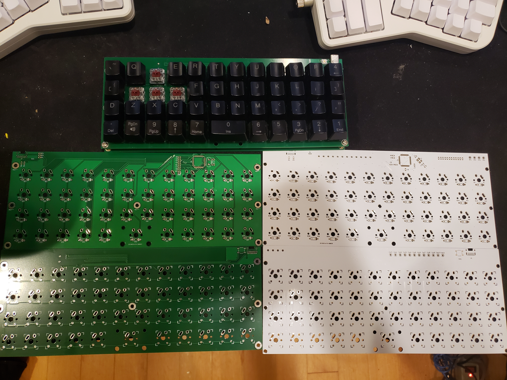
Revision 2 Green, Revision 1 White, Back top, Front bottom


Bill Of Materials
- See BOM.md
- The total cost for a Rev 2 PCB keybarod is:
| Component |
Unit Price |
Units |
Total |
| Capacitor 22 pF |
$0.043 |
2 |
$0.086 |
| Capacitor 0.1 μF |
$0.0216 |
5 |
$0.108 |
| Capacitor 1.0 μF |
$0.055 |
1 |
$0.055 |
| Diode |
$.02446 |
47 |
$1.223 |
| LED |
$0.159 |
1 |
$0.159 |
| USB-C Receptacle |
$1.37 |
1 |
$1.37 |
| Kalih Speed Copper Key Switch |
$0.538 |
47 |
$25.286 |
| Resistor 10 kΩ |
$0.0071 |
2 |
$0.0142 |
| Resistor 22 Ω |
$0.0071 |
2 |
$0.0142 |
| Resistor 5.1 kΩ |
$0.0071 |
2 |
$0.0142 |
| Resistor 220 Ω |
$0.0071 |
1 |
$0.0071 |
| Push Button Switch |
$0.59 |
1 |
$0.59 |
| Atmega32U4 |
$4.08 |
1 |
$4.08 |
| Crystal Oscillator |
$0.36 |
1 |
$0.36 |
| PCB |
$2.08 |
2 |
$2.08 |
| M3 Screws |
$0.033 |
7 |
$0.233 |
| M3 Standoff |
$0.033 |
7 |
$0.233 |
| Total |
|
|
$35.89 |
Notes
- Shipping costs are excluded from the BOM
- Currently, I am reusing keycaps, so those are not included in the BOM
- I am part of the group buy for KAT Mizu Keycaps, which would add $64.44 to the total
- Kailh Speed Copper are my favorite switches, but they cannot be recomended for this keyboard. They are missing the pins to be used in a plateless keyboard like this one.
PCB Tutorial
Designing a custom mechanical keyboard PCB using KiCad. The following was based on Ruiqi Mao's Tutorial
Download Kicad and Install the Mechanical Keyboard Libraries
-
Download and install Kicad from https://kicad-pcb.org/
- During installation, choose to download Kicad's default libraries
-
Clone the following two repositories (or download zip and extract):
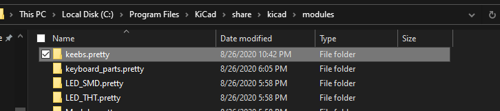
-
Open Kicad > Preferences > Manage Footprint Libraries
- In the
Global Libraries tab, press the folder icon to Add existing library to table
- Navigate to where you cloned the the libraries, click on the
keebs.pretty and press OK
- Do the same for
keyboard_parts.pretty and Type-C.pretty
- If done successfully, you should see the following in the
Global Libraries tab:
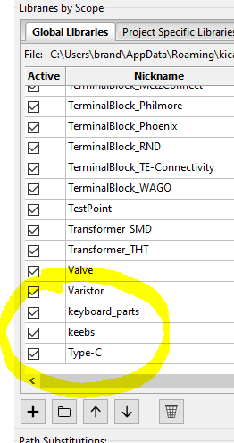
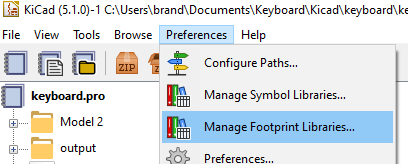
-
Back in the Kicad Menu, Preferences > Mange Symbol Libraries
- In the
Global Libraries tab, press the folder icon to Add existing library to table
- Navigate to where you cloned
kicad_lib_tmk and select keyboard_parts.lib
- Navigate to
Type-C.pretty and select Type-C.lib
- If done successfully, you should see the following:

Creating The Schematic File
-
In Kicad: file > New > New Project
- Create a new Folder for the project, and give a name for the project (I am using
tutorial_keyboard)
- Press
Save
- On the left side, you should now see 3 files:
tutorial_keyboard.kicad_pcb: The PCB filetutorial_keyboard.pro: The project file, we will not be using thistutorial_keyboard.sch: The schematic file

-
Click on the Schematic Layout Editor button
-
Because this schematic will be large, increase the paper size by going to file > Page Settings... then selecting the C page size
Placing Components on the Schematic
-
To place a part, press the Place symbol button on the right side
-
For the microcontroller:
Place symbol and click on the page > expand keybord_parts > select ATMEGA32U4 > press OK > Click on the sheet to place the component- You should now see the component placed on your page with the label U?


-
Place the following components as required by the datasheet
- A 10 kΩ resustor near
HWB/PE2
Place symbol > keyboard_parts > R > Ok
- Press
r before placing the component, or while hovering over the component after placing to rotate it
- Hover over it and press
e to Edit Value Field
- Change the
Text field to say 10k

- A 1 μF capacitor on
UCap
place symbol > keyboard_parts > C > Ok- Change the its value to
1uF
 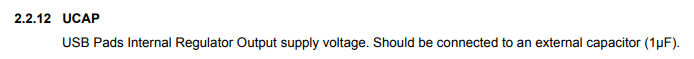
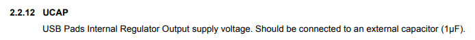
-
Connect Vcc and GND
- On the right side, slect
Place power port > click on the page
- Expand the
power library and select > VCC > Ok
- Place the VCC flag near
AVCC
- On the right, click the
Place wire icon
- Click at the empty circle on
AVCC and make a connection to the VCC flag

- Repeat for:
| Pin |
Name |
| 2 |
UVcc |
| 7 |
VBus |
| 14 |
VCC |
| 24 |
AVcc |
| 34 |
VCC |
| 44 |
AVcc |
- Make sure there are 6 total connections to
VCC
- Individual connections to
VCC in the schematic do not need to be connected together
- Connect
VCC to a power flag
Place symbol > Search for PWR_FLAG > PWR_FLAG- Connect the
PWR_FLAG to VCC

Place power port > GND (Power flag, ground from the spower` library)
- Create a connection to
GND on the following pins:
| Pin |
Name |
| 5 |
UGND |
| 15 |
GND |
| 23 |
GND |
| 35 |
GND |
| 43 |
GND |
- Additionally, connect the other end of the capacitor and resistor to
GND
- Make sure there are 5 connections to
GND

-
If there are any overlapping components or labels, press m over the component/label to move it somewhere else
- You will have to remake any connections
-
Reset Circuit
- The following allows for a manual reset button that (If you do not want a reset button, connect
RESET to VCC)
- Move to an open part of the page
Place symbol > keyboard_parts > SW_PUSH- We want the voltage supplied to the reset pin to be
High (5V) normally, and ground when pushed to reset the microcontroller
- Connect the left side to
GND
- Create a connection between
VCC -> 10 kΩ resistor -> switch-s right pin
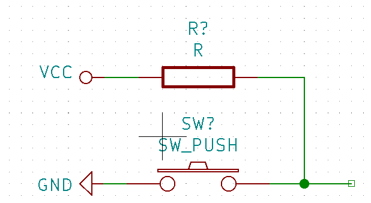
- Place a flag on the right side:
- In the right menu:
Place net label
- Give it the name
Reset
- Connect it to the wire on the right side
- Place a net label with the name
Reset on the RESET pin (pin 13) of the microcontroller
- The reset circuit is now connected to the microcontroller

-
USB Type-C Circuit
- This keyboard will connect to a computer using a USB-C connector in USB 2.0 Mode
Place symbol > Connector > USB_C_Receptacle_USB2.0- Make the following connections
| Receptacle Port |
Connection |
VBUS |
VCC |
CC1 |
5.1 kΩ resistor -> GND |
CC2 |
5.1 kΩ resistor -> GND |
D- |
Connect both D- pins through a 22 Ω resistor to a net called D- |
D+ |
Connect both D+ pins through a 22 Ω resistor to a net called D+ |
SBU1 |
Leave unconnected |
SBU2 |
Leave unconnected |
GND |
GND |
SHIELD |
GND |
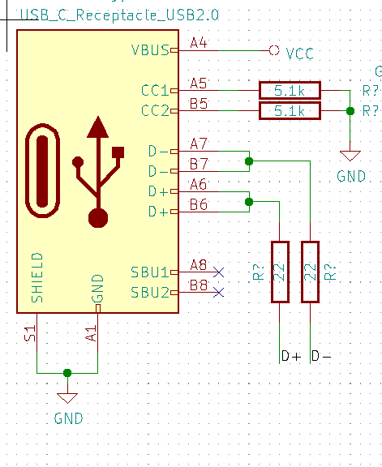
- On the microcontroller, connect
D- (pin 3) to the D- net and D+ (pin 4) to the D+ net

-
Crystal Oscillator Circuit
- The following circuit is required for the microcontroller to function as a USB device
Place symbol > keyboard_parts > XTAL- Connect a 22 pF capacitor to both ends of the
XTAL with the other side going off to GND
- Connect one side of the
XTAL to a net called xtal1 and the other to a net called xtal2
- Connect the
xtal1 net to XTAL1 (pin 16) and xtal2 to XTAL2 (pin 17) on the microcontroller

-
Placing the keys
- The following circuit is used for all the keys:
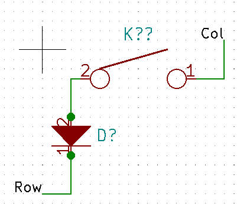
Place symbol > keyboard_parts > KEYSWPlace symbol > keyboard_parts > D- Connect the
2 pin on the KEYSW on to the 2 pin on the diode Orientation on the diode is extremely important
- For an 47 key ortholinear keyboard, copy and paste this circuit 46 times in rows of 12 (besides the third row which should have 11 keys)
- Connect all the pin 1's on the switch on the same row
- Connect all the pin 1's on the diode to the next pin 2 on the switch in the columns

- Connect the bottom row diodes together
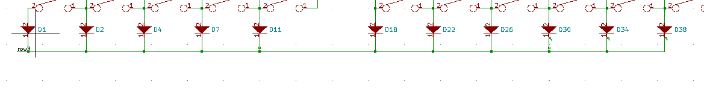
- Create a net on the each of the vertical wire segments in the top row named
col0 to col11
- Create a net on the the left most switch of each row labeled
row0 to row3


- Connect each of the row and col nets to a GPIO pin on the microcontroller (
PAX, PBX, PCX, or PDX) these can be changed later to make it easier to route the PCB

-
Bypass Capacitors
- Bypass capacitors are placed between all
VCC nets and GND, watch this video to learn more
- There are 6 connections that will use bypass capacitors
- Create the following circuit using 0.1 μ capacitors

-
Mark all unconnected ports
- In the right menu, click
Place no connection flag
- Place the symbol over all unused ports on the microcontroller and on
SBU1 and SBU2 on the USB C receptacle

-
Annotate the schematic to give components names
Tools > Annotate Schematic- Keep all default settings
- Press
Annotate
Close
-
Run a Design Rules Check to make sure there are no errors in the circuit
Perform electrical rules check > Run- Fix any errors that occur, if there are only errors for your
VCC or GND not being driven, you can move on

- Assigning footprints tell the PCB software what size to make all of your components. Additionally you will buy components based off the size of their footprint. For most components we will use the
0805 surface mount package. If you do not feel comfortable surface mounting components, you will have to heavily modify the PCB layout.
Tools > Assign Footprints...
| Components |
Library |
Footprint |
| All Capacitors |
Capacitor_SMD |
Capacitor_SMD:C_0805_2012Metric |
| All Diodes |
Diode_SMD |
Diode_SMD:D_0805_2012Metric |
| USB C Receptacle |
Type-C |
Type-C:USB_C_GCT_USB4085 |
All KEYSW EXCEPT FOR THE SPACE BAR |
keebs |
keebs:Mx_Alps_100 |
| Space Bar (sixth key in on the bottom row) |
keebs |
keebs:Mx_Alps_200 |
| All Resistors |
Resistor_SMD |
Resistor_SMD:R_0805_2012Metric |
SW_PUSH |
Button_Switch_SMD |
Button_Switch_SMD:SW_SPST_TL3342 |
ATMEGA32U4 |
Package_QFP |
Package_QFP:TQFP-44_10x10mm_P0.8mm |
XTAL |
keyboard_parts |
keyboard_parts:XTAL_HC_49_TH |
 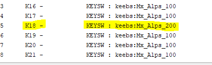
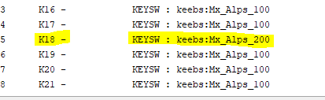

Creating the PCB
Set the Grid Size
- Click the
Grid dropdown menu on the top
Edit User Grid- Set
Size X and Size Y to 0.254

Importing From the Schematic
- Close the schematic and open
PCB Layout Editor
Tools > Update PCB from Schematic- Click Anywhere to Place all the components
- Click
Layers Manager > Items > Uncheck the box next to Ratsnest
- This will be helpful when routing the PCB, but it is not now
Organizing your components
- Arrange the keys in the same order as your circuit
- The easiest way I found to do this is to use
ctrl + f to search for the key annotations
- I like to leave one grid snap gap between each key, make sure all keys are evenly spaced on the grid
- There should be a visible
+ sign between all groups for 4 adjacent keys
Follow the annotations from your schematic to put the keys in the correct order


Place the Other Parts
- Because this keyboard mostly uses surface mount components, they will mostly go on the back to hide them
- To place a component on the back, click on the footprint and press
f
- The text for the label should be backwards and in purple
- Flip all diodes to the back, and align them onto their key switch
- Place the diode on the lower part of the key switch (opposite of the gold)

- Turning on
ratsnest may be helpful for this part
- Arrange the other parts on the back above the key switches
- All the components in the schematic that are near the microcontroller should go near the microcontroller
- 5 bypass capacitors should go near the microcontroller with the other going near the USB-C receptacle
- The crystal should go on the back as close as possible to the microcontroller pins it connects to
- The Type-C connector should go on the front, it will be the highest component on the PCB
- The switch can go on the front or back based on preference, I put it on the front
Adjust your circuit
- With the
ratsnest turned on, move the location of rows and cols on your microcontroller to reduce the number of ratsnests that overlap
- After making a change,
Tools > Update PCB From Schematic
Set the Track Width
- I use JLCPCB to manufacture my PCBs, their minimum trace width is 5 mil (0.127 mm) with the same minimum spacing

- The default .254 mm width does not need to be changed, but you can go down to .2 mm to have smaller traces
Making connections
- To make a connection, use the bar on the right to select a layer
F.CU for components on the frontB.CU for components on the back
- You must select the layer of the starting component to make a connection
- With the correct layer selected, press
Route tracks
- Connect all components, but do not connect any
GND nets, those will all be taken care of in the end
- To make connections easier, click on the footprint and press
R to rotate the component if that makes it easier
- I recommend breaking out all the pins of the microcontroller before worrying about connecting the microcontroller to components
- If traces are going to overlap, press
v to insert a via between the front and the back to switch layers
Create the Remaining Connections
Connect the diodes for all keys in the same row
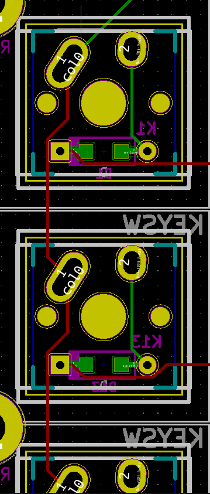
Connect the switches in the same column
Break out connections from the USB-C receptacle
Add Mounting Holes
- This desing suspends the PCB from standoffs, to use them, m3 screw holes are added to the PCB
Place > Footprint > MountingHole_3.2mm_M3- I personally put 3 screw holes on each side and one in the middle
- Adding more holes can make the PCB flex less
Creating an outline for the PCB
- Select the
Edge.Cuts layer
- Select the
Add graphic lines tool
- Draw a fully connected rectangle around all your components
- The USB-C connector should be on the outer limits of the PCB on the top, and the screw holes should be the limit on the sides
- The smaller the PCB, the cheeper it will be to fabricate
- After creating the outline, try opening
View > 3D Viewer
- If you see the folowing error, look for any missing connections in your edge cuts or extra lines
- Once you fix all the errors, you should be able to view a 3D rendering of the PCB

Adding a Ground Plane
- In the previous steps, no connections were made to ground, we will resolve them all now
- On the right side, select the
Add filled zones tool on the back side and the GND net
- Select the top left corner > top right corner > bottom right corner > double click on the lower left corner
- You should see:
- By zooming in, you can see connections made to ground nets
- Repeat the process on the top side
Press the Do not show filled zones button on the left side to hide the filled zones
Run the Design Rules Check
- Press
Perform Design Rules Check on the top bar
- Select the
Refill all zones before running DRC > Run DRC
- Resolve any errors that show up
- The most common errors are:
- Missing connections to ground:
- It is possible that your filled zones cannot get around a trace or component, you may need to add some manual ground connections
- Traces too close:
- Re-route the traces to increase the distance between the traces
- Traces too close to holes in PCB
- When there are no design rule check violations, the PCB is complete
Submitting PCB for Fabrication
Generate Gerber Files
- Refer to this page from JLCPCB for instructions
File > Plot- Select a folder for
Output Directory
- On the front page, leave all the default settings and press
Plot
- Press
Generate Drill Files...
- Click the
Gerber option on the left
- Press
Generate Drill File
Submitting to JLCPCB
(Instructions will also be shown for OSHPARK, but they are much more expensive for large PCBs)
- Create a
.zip from the output folder
- Go to JLCPCB
- Press
QUOTE NOW
Add your gerber file > Select your .zip- You can leave all the default options unless you want a different color
- Proceeded with checkout, they will verify your that your design complies with their manufacturing process and has all the needed files
- $10.40 + 16 for Fedex Shipping
- Total time to receive your PCB should be less than two weeks (unless shipping by boat)

OSHPARK
- PCBs from OSHPARK are more expensive, but higher quality. For large runs, it may make sense to use OSHPARK (you also have to be fine with a purple PCB)
- Go to wwww.oshpark.com
- Upload your
.zip
- I saw that their quote was 5 times as much for 2 fiewer PCBs and did not continue...
Ordering Components from Digikey
- For this tutorial, the following components are purchased from Digikey
- Note the quantities needed per the schematic and BUY MORE THAN YOU NEED, A LOT MORE (I generally buy 5-10 times as many of each component, it is often cheaper to buy at higher quantities)
| Item # |
Item |
Price |
Digikey Link |
Data Sheet |
| 1 |
USB C Connector |
$1.37 |
Link |
Link |
| 2 |
Capacitor (22pF) |
$0.043 |
Link |
Link |
| 3 |
Capacitor (0.1 μF) |
$0.0216 |
Link |
Link |
| 4 |
Capacitor (1 μF) |
$0.055 |
Link |
Link |
| 5 |
Diode |
$.02446 |
Link |
Link |
| 6 |
Resistor (10 kΩ) |
$0.0071 |
Link |
Link |
| 7 |
Resistor (22 Ω) |
$0.0071 |
Link |
Link |
| 8 |
Resistor (5.1 kΩ) |
$0.0071 |
Link |
Link |
| 9 |
Switch |
$0.59 |
Link |
Link |
-
To search on your own for components (resistor example):
- Go to Digikey
Products > Passives > Resistors > Chip Resistor - Surface Mount- Use the filters to get the correct value resistor
- Set the
View Prices At value to 10
- For most components, I ended up in the 10-100 piece price bracket
- This will exclude any components that can only be purchased in high quantities
- Click
More Filters
Package > 0805 (based on the assigned footprint)Apply All- I also recommend deselecting
Include under Marketplace Product
Applied Filters should show Package/Case and Resistance
- In the table, click the
Search Ascending arrow under Price to show the lowest cost components
- For this keyboard, there really aren't any components where using a more expensive part is worth getting
-
Repeat this process for all the other components, or use the products I listed in the table
Components From Other Sources
Keyswitches
- I recommend ordering keyswitches from Mechanicalkeyboards.com
- MAKE SURE THE SWITCHES YOU CHOOSE SAY PCB MOUNT
- I used my favorite switch, Kalih Speed Copper, which is plate mount
- PCB mounted switches have two additional feet to help alignment
- Plate mounted switches are very hard to align
- Do not buy plate mounted switches

WIP